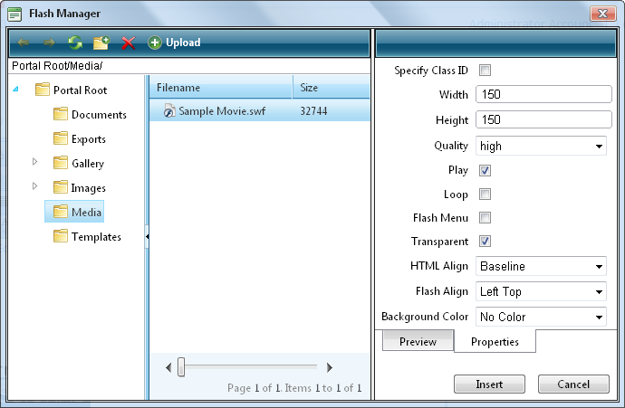

Inserting Flash
How to insert Flash media using the TelerikEditorProvider for the RTE.
- Click the Flash Manager button. This opens the Flash Manager.
- Navigate to and select the required Flash. See "Using the Resource Manager"
- Optional. Click the Properties tab and set the properties.
- At Specify Class ID, select from these options:
- Mark
 the check box to set a class for this media. This reveals the Class ID text box.
the check box to set a class for this media. This reveals the Class ID text box.- In the Class ID text box, enter the name of the CSS class to be applied to this Flash.
- Unmark
 the check box at Specify Class ID to hide the Class ID field and ensure all other fields can be set.
the check box at Specify Class ID to hide the Class ID field and ensure all other fields can be set.
- Unmark the check box to use the default class.
- In the Width text box, enter a pixel value to set the Flash width. Leave this field blank to use the width defined by the Flash.
- In the Height text box, enter a pixel value to set the Flash height. Leave this field blank to use the height defined by the Flash.
- At Quality, select High, Medium or Low as the quality of the Flash.
- At Play, to auto play the Flash - OR - if the user must select to play the Flash.
- At Loop, to automatically loop the Flash movie repeated - OR - if the user must select to replay the Flash.
- At Flash Menu, to display the Flash menu - OR - to hide it.
- At Transparent, for a transparent background - OR - to disable.
- At HTML Align, select the HTML alignment.
- At Flash Align, select the Flash alignment.
- At Background Color, select No Color for no background color or select a color from the drop down list.
- Click the Insert button.
Tip: You cannot edit the properties of Flash once it has been inserted. To modify Flash, simply delete it and reinsert it with the required properties.

Inserting Flash